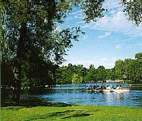

Roath Park
Roath Park est une véritable oasis, très appréciée pour ses espaces verts et son lac propices à la détente, un mélange harmonieux de terre et d’eau qui permet de se ressourcer au cœur de la ville.
Les principaux éléments du jardin botanique sont la roseraie, le jardin d’hiver et l’aire de jeux. Ils sont entourés d’un paysage de pelouses et d’arbres, avec une belle collection de conifères et des bordures d’arbustes et de vivaces où des plantes sont en fleur tous les mois de l’année.
Le jardin sauvage, très paisible, dans la partie la plus au Nord du parc, contient différents arbres indigènes et exotiques.
Pour beaucoup de visiteurs, le lac de 16 hectares est le joyau du parc. Entouré par des pelouses et des arbres, c’est un lieu très apprécié pour faire du bateau, de la pêche, du jogging et de l’ornithologie (on y trouve beaucoup de gibier d’eau).